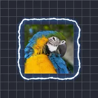

Bordas elétricas

Desenha um contorno brilhante e crepitante ao redor da camada, que treme como eletricidade quando Semente ou Evolução é animada, com linhas de contorno opcionais dentro.
Configurações
| Configuração | Tipo | Intervalo | Padrão |
|---|---|---|---|
| Distância | Número | 0 px a 300 px | 30 px |
| Espessura | Número | 0 a 1 | 0.8 |
| Detalhe | Número | 0 a 20 | 2 |
| Distorção | Número | -1 a 1 | 0.5 |
| Cor | Cor | – | #FFFFFF |
| Cor do brilho | Cor | – | #3C8CFF |
| Alfa | Número | 0% a 100% | 100% |
| Brilho | Número | 0% a 100% | 50% |
| Semente | Número | 0 a 5 | 0 |
| Evolução | Número | -999 a 999 | 0 |
| Preenchimento | Número | 0% a 100% | 100% |
| Intensidade da máscara | Número | 0 a 1 | 0 |
| Evolução da máscara | Número | -50 a 50 | 0 |
| Escala da máscara | Número | 0.01 a 50 | 1 |
| Semente da máscara | Número | 0 a 5 | 0 |
| Cor da máscara | Cor | – | #FF3CDC |
| Renderizar contornos | Ativado ou desativado | – | Desativado |
| Número de contornos | Número | 0 a 200 | 20 |
| Fase do contorno | Número | -999 a 999 | 0 |
| Ângulo do contorno | Ângulo | -3600° a 3600° | 0° |